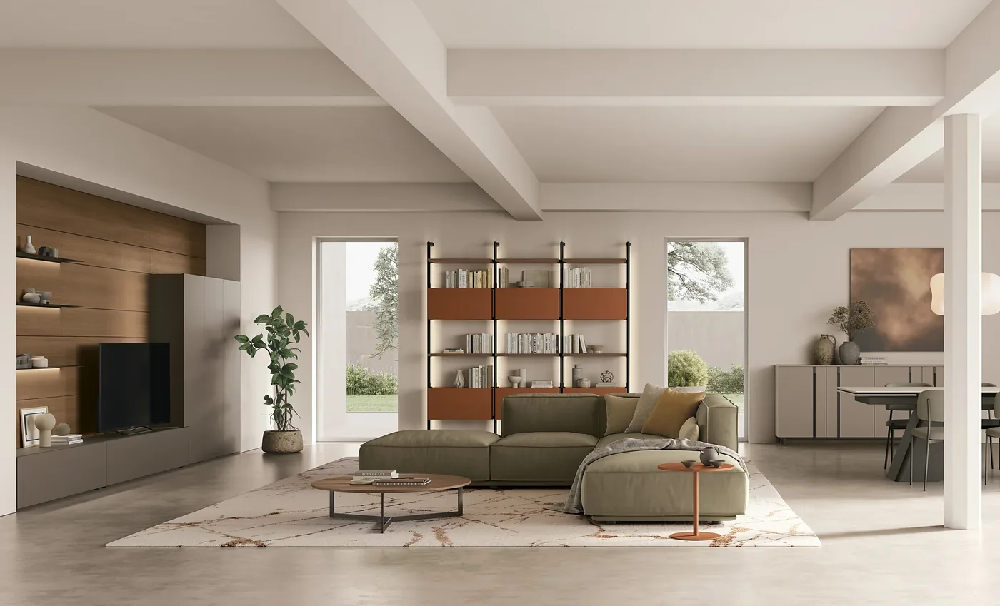
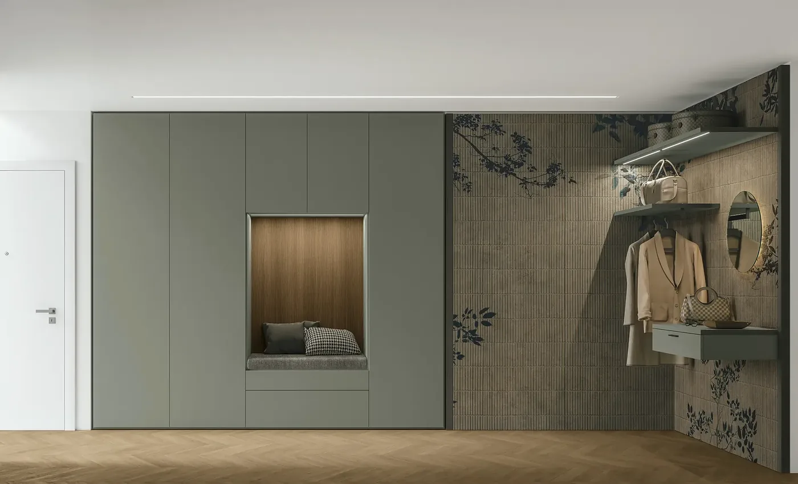

Meubles italiens à composer
Tomasella, du séjour au dressing.
Un mur pour les livres, une place pour les manteaux ou un lit autour duquel composer la chambre. Quel meuble vous manque chez vous ?
- Séjour, rangements, chambre
- Projection 3D de votre projet
- Première visite et conseil offerts
Quel meuble pour votre pièce ?
Allez directement au mur TV, à la bibliothèque, au placard d’entrée, au dressing ou au lit.
-

Meuble TV · Atlante AT150
Que voit-on depuis le canapé ?
Sur cette composition Atlante, la télévision se détache sur un panneau sombre. Les livres et les objets occupent les étagères éclairées à côté. Pour dessiner le vôtre, prenez une photo depuis votre place habituelle. On verra où tombe le regard et de quel côté arrivent les prises.
Choisir la hauteur de mon écran -

Bibliothèque · Andromeda
Des livres derrière le canapé.
Dans ce séjour ouvert, la bibliothèque Andromeda s’adosse au mur, entre deux fenêtres, derrière le canapé. Ses montants fins laissent voir le mur. Avant de choisir sa largeur, mesurez la place entre les fenêtres et gardez un passage derrière le canapé.
Aménager mon séjour -

Placard d’entrée · Logica Plus+ 05.A
Pouvoir s’asseoir pour enlever ses chaussures.
La composition 05.A réserve une assise dans le mur d’armoires. On pose son sac en rentrant et on retrouve son manteau près de la sortie. Votre place libre est sous les marches ? La composition 06.A sous escalier descend avec la pente.
Regarder le vestiaire de plus près -

Dressing · Doxa DO210
Voir ses vêtements d’un seul regard.
Sur le dressing Doxa DO210, penderies et étagères se côtoient. Pour préparer le vôtre, prenez votre manteau le plus long et une pile de pulls. L’un donne la hauteur à réserver sous la tringle, l’autre la place utile entre deux étagères.
Mesurer la profondeur de mon dressing -

Lit tapissé · Corinto
Le lit reste au centre de la chambre.
Le Corinto se reconnaît à la double surpiqûre de sa tête de lit. Si vous gardez vos chevets, mesurez leur hauteur et l’espace de chaque côté du couchage. Au magasin, on regardera comment la nouvelle tête de lit se place entre eux.
Vérifier la place autour du lit


Quel espace faut-il devant le meuble ?
-
Liscia, une armoire à portes battantes.
Tomasella illustre Liscia par une composition de 62 cm de profondeur extérieure. Tracez d’abord sa façade au sol, puis imaginez la porte ouverte face au lit ou au chevet.
-
Primafila, des portes qui coulissent.
La composition illustrée par Tomasella mesure 68,6 cm de profondeur extérieure. Les portes glissent devant l’armoire. Mesurez encore la place pour vous tenir devant et sortir le linge.
Ces deux mesures se rapportent aux compositions du fabricant. Le guide de profondeur du dressing aide à relever les mesures de votre propre chambre.
Choisir les finitions au magasin.
-

Les matières en main
Bois, laques mates et décors, au magasin.
-

Chêne moka et piétement en métal
Meuble TV Time TI130, ambiance Tomasella.


Composition de séjour · Time
Et si le meuble se prolongeait le long du mur ?
Dans cette ambiance Time, la laque et le bois rythment la composition murale. Si votre table ou votre canapé reste en place, apportez-en une photo pour comparer les teintes au magasin.
Ambiance de la collection Time, photo Tomasella.
Voir un séjour aménagé par FONYVos questions
Avant de commencer.
Tomasella fait-il du sur mesure ?
Ce sont des systèmes modulables : les modules se combinent pour s’ajuster à votre mur. Pour une pente ou un recoin que les modules ne couvrent pas, nous avons aussi une solution sur mesure.
Peut-on voir le projet avant de commander ?
Oui. Nous préparons une projection 3D de votre composition.
Faut-il prendre les mesures soi-même ?
Vos mesures et une photo suffisent pour commencer. Si vous le souhaitez, nous venons les relever chez vous.
Parlons de votre projet.
Apportez une photo de la pièce et les dimensions du mur. Parking facile d’accès, avec ou sans rendez-vous.
Partager cette page
- Lundi
- 13h30 – 18h30
- Mardi au samedi
- 10h30 – 18h30
- Dimanche
- Fermé
- Téléphone
- 064 46 07 72
- Livraison
- Par nos soins, dans le Hainaut (Binche, La Louvière, Mons, Charleroi…) et la province de Namur
Nous livrons aussi dans le nord de la France. Ailleurs, dont Bruxelles : sur demande.